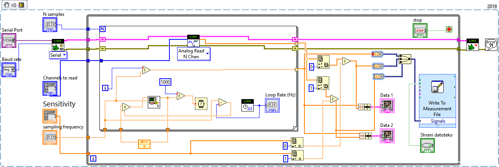
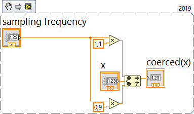

Fourierova integralska transformacija
Contents
3. Fourierova integralska transformacija¶
Fourierova transformacija je matematično orodje, s katerim preslikamo signale iz časovne v frekvenčno domeno.
Note
Fourierova transformacija in njen inverz sta integralski preslikavi, ki ste ju definirali na predavanjih:
Note
Realni (pomerjeni) signali običajno niso podani v obiliki funkcijskega predpisa \(x(t)\), temveč so podani v obliki časovne vrste vrdnosti signla, pomerjene pri diskretnih časovnih točkaj, \(x(n\,\Delta t)\).
V praksi bomo zato pogosto raje govorii o Diskretni Fourierovi transformaciji (DFT), definirani na predpostavki diskretno vzorčenega s konstantnim časovnim korakom, katere rezultat je diskretna frekvenčna prdstavitev signala s konstantnim korakom v frekvenčni domeni, \(X(k\,\Delta f)\).
Na področju procesiranja signalov je izrednega pomena tudi numerično učinkovit algoritem Hitre Fourierove transformacije (FFT), ki omogoča časovno-frekvenčno preslikavo zajetih diskretnih signalov v realnem času.
O DFT in FFT boste več govorili na enem od naslednjih predavanj.
3.1. Fourierova transformacija v Pythonu¶
Poglejmo si uporabo algortima (diskretne) Fourierove transformacije, implementiranega v Numpy in Scipy, na primeru sinusnega signala z amplitudo \(A\) ter sekundno frekvenco \(p\).
Na predavanjih ste povedali, da velja:
Fourierova transformacija \(x(t)\) pa je:
Pripravimo funkcijo za vizualizacijo Fourierove transformacije sinusnega signala:
import numpy as np
import matplotlib.pyplot as plt
def fourier_sin(A, p):
"""
Vizualizacija fourierove transformacije sinusnega signala z amplitudo
`A` in frekvenco `p` Hz.
Vrne amplitudo spektra pri frekvenci `p`.
"""
A_p = 1j*A/2
freq = np.array([-2*p, -p, 0, p, 2*p])
amp = np.array([0., A_p, 0, A_p, 0])
plt.axhline(y=0, c='k', lw=2)
plt.axvline(x=0, c='k', lw=1)
for i, x in (enumerate(freq)):
plt.plot([x, x], [0, np.abs(amp[i])], 'k', lw=2)
plt.plot(freq, np.abs(amp), 'ro', label='analitični amplitudni spekter')
plt.xlabel('$f [Hz]$')
plt.ylabel('$|X(f)|$')
p = 5
A = 10
fourier_sin(A, p)

Pripravimo sinusni signal in poglejmo rezultat DFT:
dt = 1/(p*50)
t = np.arange(0, 1, dt)
x = A*np.sin(2*np.pi*t*p)
Izračun FFT poljubnega signala:
X = np.fft.fft(x)
freq = np.fft.fftfreq(len(t), dt)
Izračun FFT realnega signala:
X_r = np.fft.rfft(x)
freq_r = np.fft.rfftfreq(len(t), dt)
fourier_sin(A, p)
plt.plot(freq, np.abs(X), '.-', label='Numpy FFT poljubnega signala')
plt.plot(freq_r, np.abs(X_r), '.-', label='Numpy FFT realnega signala')
plt.xlim(-2*p, 2*p)
plt.legend();

Opzimo, da se teoretične in dobljene amplitude ne ujemajo.
Naloga 1 (10 minut)
Raziščite implementacijo skaliranja (normalizacije) diskretne Fourierove transformacije v Numpy in zgornjo kodo nadgradite tako, da se bodo dobljene amplitude ujemale s teoretičnimi.
Dodatek: Raziščite možnosti povečanja frekvenčne ločljivosti (\(\downarrow \Delta f\)) pri uporabi diskretne fourierove transformacije. S katerim parametrom zajema signala je ta poezana? (Namig: argmument n funkcije np.fft.rfft.)


3.2. DFT realnega signala¶
Naloga 2 (30 min)
Z uporabo generatorja signalov in Arduino zajemnega sistema pripravite ter zajamite dva signala različnih oblik s parametri iz podatkov domače naloge 3, ki jih najdete v e-učilnici.
Pri zajemu podatkov lahko uporabite LabView program, ki ste ga pripravili na prejšnji vaji, ali pa program, ki ga najdete spodaj.
Ne pozabite programa pred zajemom prirediti tako, da bo:
deloval z vašim zajemnim sitemom (nastavitev COM vrat, mesto shranjevanja .lvm datoteke),
če program omogoča nastavitev občutljivosti, te nastavite na vrednost 1,
omogočal nastavitev časa trajana segmenta (namesto števila vzorcev v segmentu),
zajel signal glede na parametre naloge (pozor, tokrat shranjujemo le en segment meritve).
Nalogo lahko rešujete v parih, tako, da si ustrezno razdelite delo (nastavitev generatorja signala, zajem signalov).
Osnovna navodila za uporabo generatorja signalov RIGOL DG 1022 najdete v predlogi prejšnje laboratorijske vaje.

Za delovanje potrebujete tudi naslednji podprogram:

Oboje lahko prenesete lahko tudi v obliki zip arhiva.
3.2.1. Obdelava zajetega signala¶
Naloga 3 (15 min)
Sinusni signal, zajet pri prejšnji nalogi, naložimo v Python program.
Določimo parametre (amplitudo \(A\), frekvenco \(p\), fazni zamik \(\varphi\)) zajetega signala (
scipy.optimize.curve_fit).Amplitudni spekter zajetega sinusnega signala primerjajmo s teoretičnim amplitudnim spektrom funkcije \(A \, \sin(2\, \pi \, p \, t)\).
Pri branju podatkov, shranjnih v .lvm datoteke, si lahko pomagate s paketom lvm_read.
Primer uporabe si poglejmo spodaj.
import lvm_read
file = 'data/03/sinus.lvm'
data = lvm_read.read(file)
data['Segments']
1
Segment podatkov je v slovarju shranjen s ključem zaporednega indeksa. Vsak posameni segment je prav tako slovar, v katerem do surovih shranjenih podatkov dostopamo s ključem 'data':
kanali = data[0]['data']
kanali.shape
(500, 1)
Posamezni stolpci podatkov predstavljajo po en shranjen kanal:
signal = kanali[:, 0]
signal.shape
(500,)
Časovni vektor lahko pripravimo na podlagi znane frekvence vzorčenja:
fs = 100 # vzorcev / s
t = np.arange(len(signal)) / fs
plt.figure()
plt.plot(t, signal, label='kanal 1')
plt.xlabel('t [s]')
plt.ylabel('napetost [V]')
plt.legend()
<matplotlib.legend.Legend at 0x22e41416b00>

3.2.1.1. Določitev parametrov zajetega signala s scipy.optimize.curve_fit:¶
from scipy.optimize import curve_fit
Definiramo funkcijo modela našega signala, katere prvi parameter je neodvisna spremenljivka \(t\), ostali argumenti pa so iskani parametri:
def model(t, A, p, phi, V_0):
"""
Model funkcije `A*sin(2*pi*p*t + phi) + V_0` za aproksimacijo.
"""
return A*np.sin(2*np.pi*p*t + phi) + V_0
Določimo smiselne začetne približke:
A_0 = (np.max(signal) - np.min(signal)) / 2
plt.plot(t, signal, 'k')
plt.fill_between(t, np.mean(signal) - A_0, np.mean(signal) + A_0, color='C0', alpha=0.25)
plt.xlabel('t [s]')
plt.ylabel('signal [V]');

from scipy.signal import find_peaks
i_vrhov = find_peaks(signal)[0]
t_vrhov = t[i_vrhov]
p_0 = 1 / (t_vrhov[1] - t_vrhov[0])
plt.plot(t, signal, 'k')
plt.fill_between(np.linspace(t[i_vrhov[0]], t[i_vrhov[0]] + 1/p_0), np.min(signal), np.max(signal), color='C0', alpha=0.25)
plt.xlabel('t [s]')
plt.ylabel('signal [V]');

V_0 = np.mean(signal)
plt.plot(t, signal, 'k')
plt.axhline(V_0, c='r')
plt.xlabel('t [s]')
plt.ylabel('signal [V]');

normal_signal = (signal - V_0) / A_0
phi_0 = np.arcsin(normal_signal[0])
plt.plot(t, normal_signal, 'k')
plt.plot(t[0], normal_signal[0], 'ro')
print(np.rad2deg(phi_0))
plt.xlabel('t [s]')
plt.ylabel('normaiziran signal [V]');
44.997822182694726

popt, pcov = curve_fit(model, t, signal, p0=[A_0, p_0, phi_0, V_0])
A, p, phi, V_0 = popt
plt.plot(t, model(t, A, p, phi, V_0), lw=2, label='aproksimiran signal')
plt.plot(t, signal, 'k.', label='zajet signal')
plt.legend()
plt.xlabel('t [s]')
plt.ylabel('signal [V]');

3.2.2. (Diskretna) Fourierova transformacija zajetega signala¶
S = np.fft.fft(signal) / len(t)
freq = np.fft.fftfreq(len(t), 1/fs)
fourier_sin(A, p)
plt.plot(freq, np.abs(S), '.-', label='zajeti signal')
plt.xlim(-2*p, 2*p);
plt.legend(loc=(1.01, 0));

Odprava statične (DC) komponte:
S_1 = np.fft.fft(signal - V_0) / len(t)
freq = np.fft.fftfreq(len(t), 1/fs)
fourier_sin(A, p)
plt.plot(freq, np.abs(S_1), '.-', label='zajeti signal brez statične komponente')
plt.xlim(-2*p, 2*p);
plt.legend(loc=(1.01, 0));

Pogosto pri realnih signalih izračunamo amplitudni spekter le pri pozitivnih frekvencah.
Da se energija signala ohrani, dobljen enostranski spekter ustrezno skaliramo:
S_r = np.fft.rfft(signal - V_0) / len(t)
S_r[1:] *= 2
freq = np.fft.rfftfreq(len(t), 1/fs)
fourier_sin(A, p)
plt.plot(freq, np.abs(S_r), '.-', label='enostranski spekter realnega signala')
plt.axhline(A, c='g', label='amplituda zajetega signala')
plt.xlim(-2*p, 2*p)
plt.legend(loc=(1.01, 0));

np.isclose(np.sum(np.abs(S_1)), np.sum(np.abs(S_r)), rtol=1e-4)
True
3.3. Domača naloga¶
Domača naloga
Oba signala, zajeta pri Nalogi 2, odprite v programu Python.
Prikažite in primerjajte njuna amplitudna ter fazna spektra.
Enaka signala generirajte tudi numerično (na primer z uporabo
scipy.signal). Primerjajte amplitudna in fazna spektra zajetih ter numeirčno pripravljenih signalov.
Pripravite kratko poročilo v okolju Jupyter Notebook (od 3 do 10 celic s kodo), iz katerega naj bodo razvidni podatki nalge (iz tabele), ter da ste vse parametre pri izvedbi naloge tudi upoštevali (ustrezno izpišite obliko signala…).
Poročilo oddajte tudi v .pdf obliki (glejte navodila za oddajo domačih nalog).
Dodatek: Raziščite lastnost časovnega premika Fourierove transformacije, in:
ocenite časovni zamik med zajetima in generiranima signaloma.
Zajeta signala v frekvenčni domeni z uporabo lastnosti časovnega zamika poravnajte z generiranima.
Poravnana signala preslikajte nazaj v časovno domeno (
np.fft.irfft) in rezultat poravnave prikažite.
Note
Lastnost časovnega premika je opisana v predlogi predavanja 3. Časovni premik signala za vrednost \(t_0\) je v frekvenčni domeni opisan z: